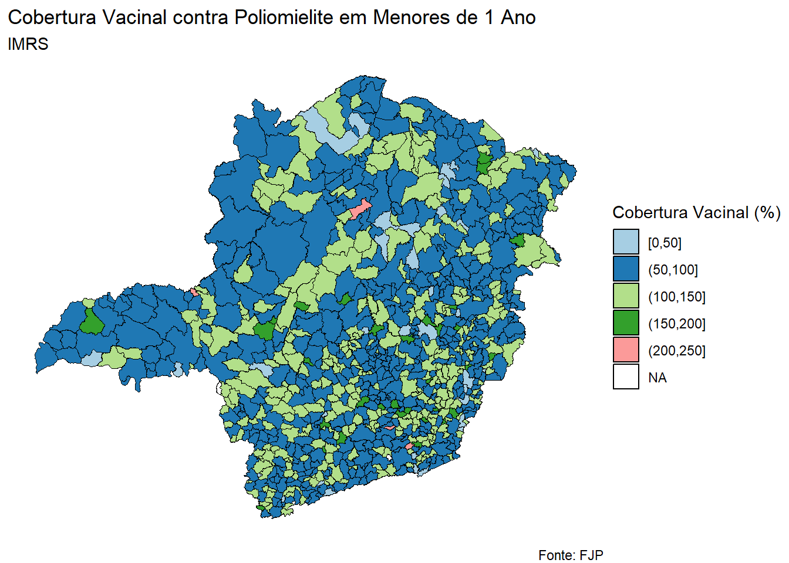
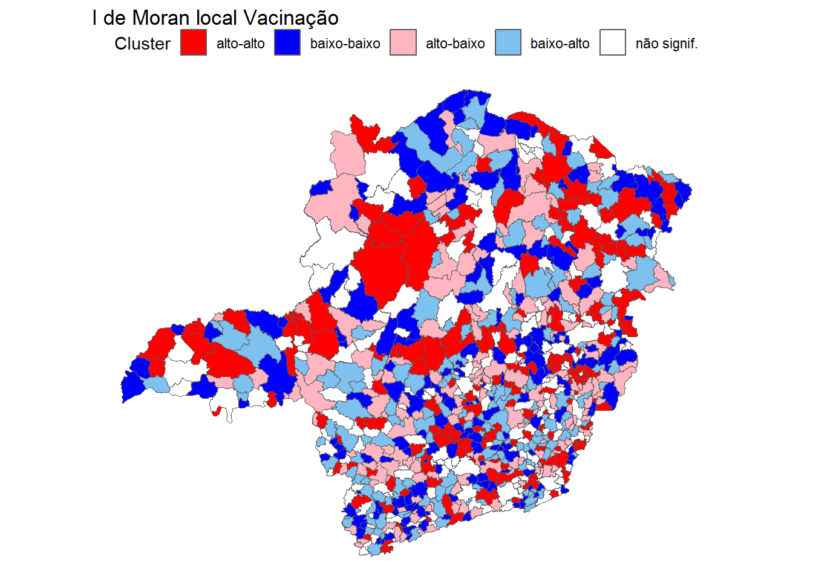

# Definir um espelho para o CRANoptions(repos ="https://cloud.r-project.org")# Instalar e carregar pacotesinstall.packages(c("geobr", "ggplot2", "dplyr", "spdep", "gt", "readxl", 'RColorBrewer'))
package 'geobr' successfully unpacked and MD5 sums checked
package 'ggplot2' successfully unpacked and MD5 sums checked
package 'dplyr' successfully unpacked and MD5 sums checked
package 'spdep' successfully unpacked and MD5 sums checked
package 'gt' successfully unpacked and MD5 sums checked
package 'readxl' successfully unpacked and MD5 sums checked
package 'RColorBrewer' successfully unpacked and MD5 sums checked
The downloaded binary packages are in
C:\Users\x7459944\AppData\Local\Temp\Rtmpei1Yef\downloaded_packages
# Leitura do mapa de MGmuni <-read_municipality(code_muni ="MG", year =2020, showProgress =FALSE) %>%rename(ibge7 =1)# Leitura dos dadoscobertura_vacinal <-read_excel("cobertura_vacinal.xlsx") %>% janitor::clean_names()# Juntar bases de dadosdf <-left_join(muni, cobertura_vacinal)
# Definir os intervalos de faixas desejadosfaixas <-seq(0, 400, by =50)# Criar uma nova variável que agrupa a cobertura vacinal em faixasdf$faixa_cobertura <-cut(df$cobertura_vacinal_contra_poliomielite_em_menores_de_1_ano, breaks = faixas, include.lowest =TRUE)# Plotar o mapa ggplot(df) +geom_sf(aes(fill = faixa_cobertura), color ="black", size =0.1) +# Ajuste do tamanho do texto dos municípiosscale_fill_brewer(palette ="Paired", name ="Cobertura Vacinal (%)") +# Paleta de cores do pacote RColorBrewerlabs(title ="Cobertura Vacinal contra Poliomielite em Menores de 1 Ano",subtitle ="IMRS",caption ="Fonte: FJP") +# Inclusão de subtítulo informativotheme_void()

# Criar matriz de vizinhança tipo rainhamg.rainha <-poly2nb(df$geom, queen =TRUE)rainha.listw <-nb2listw(mg.rainha, style ="W")
# Criar matriz de vizinhança tipo 4mg.tipo4 <-poly2nb(df$geom, queen =FALSE)tipo4.listw <-nb2listw(mg.tipo4, style ="W")
Índice de Moran e Autocorrelação Espacial
O Índice de Moran é uma medida estatística que quantifica a autocorrelação espacial em um conjunto de dados, indicando se os valores de uma variável estão espacialmente relacionados.
A matriz ( W ) define a conectividade espacial entre as unidades, mapeando relações de vizinhança e ponderando a influência de cada vizinho em uma unidade. Essa ponderação pode ser baseada em critérios como distância, contiguidade, conectividade de rede ou características socioeconômicas.
Segundo (Anselin 1988), uma matriz de pesos espaciais (W) é uma ferramenta fundamental na análise espacial que representa a estrutura espacial de um conjunto de dados. Ela serve para quantificar a influência espacial entre as unidades de análise (regiões, pontos, etc.) em um estudo.
Onde: - ( n ) é o número de unidades espaciais. - ( W ) é o peso espacial total. - ( x_i ) e ( x_j ) são os valores da variável de interesse nas unidades ( i ) e ( j ), respectivamente. - ( {x} ) é a média dos valores da variável de interesse. - ( w_{ij} ) é o peso espacial entre as unidades ( i ) e ( j ).
O Índice de Moran Local ( ( I_i ) ) quantifica a autocorrelação espacial local de cada unidade de análise. Ele é uma ferramenta útil para identificar clusters espaciais, detectar outliers e avaliar a heterogeneidade espacial.
Interpretação do ( I_i ): - Valores positivos e estatisticamente significativos indicam clusters espaciais. - Valores negativos e estatisticamente significativos indicam outliers espaciais. - Valores próximos de zero sugerem falta de autocorrelação espacial significativa.
Moran I test under randomisation
data: df$cobertura_vacinal_de_triplice_viral_da_populacao_de_1_ano_de_idade
weights: rainha.listw
Moran I statistic standard deviate = 2.9239, p-value = 0.001729
alternative hypothesis: greater
sample estimates:
Moran I statistic Expectation Variance
0.0605054703 -0.0011737089 0.0004450033
A estatística de Moran I (0.0631) indica o grau de associação espacial entre as observações. Valores positivos indicam autocorrelação espacial positiva (agrupamento de valores semelhantes próximos uns dos outros), enquanto valores negativos indicam autocorrelação espacial negativa (dispersão de valores semelhantes). Nesse caso, o valor de 0.0631 sugere uma autocorrelação espacial positiva, o que significa que municípios com altas taxas de cobertura vacinal tendem a estar próximos uns dos outros, assim como municípios com baixas taxas de cobertura vacinal.
# Calcular índice de Moran locallocm <-localmoran(df$cobertura_vacinal_de_triplice_viral_da_populacao_de_1_ano_de_idade, listw = rainha.listw)# Adicionar resultados ao conjunto de dados originaldf$spib02 <-scale(df$cobertura_vacinal_de_triplice_viral_da_populacao_de_1_ano_de_idade) %>%as.vector()df$lag_spib02 <-lag.listw(rainha.listw, df$spib02)
# Mapeamento do LISAbreaks <-seq(1, 5, 1)labels <-c("alto-alto", "baixo-baixo", "alto-baixo", "baixo-alto", "não signif.")np <-findInterval(df$quad_sig, breaks)colors <-c("red", "blue", "lightpink", "skyblue2", "white")# Ajustar np para ter o mesmo comprimento que o número de observações em dfnp <-rep(colors, length.out =nrow(df))# Converter o conjunto de dados para um objeto sfsf_df <-st_as_sf(df)# Adicionar as cores correspondentes à geometriasf_df$colors <- np
No Índice de Moran Local (I_i) referem-se a diferentes tipos de autocorrelação espacial local e podem ser interpretadas da seguinte maneira:
Alto-Alto:
Indica que a unidade de análise possui um valor alto da variável e seus vizinhos também possuem valores altos.
Pode ser interpretado como uma área com concentração de características positivas (por exemplo, alta renda, alta escolaridade) ou negativas (por exemplo, alta criminalidade, alta pobreza).
Alto-Baixo:
Indica que a unidade de análise possui um valor alto da variável, mas seus vizinhos possuem valores baixos.
Pode ser interpretado como uma área com uma unidade que se destaca por ter um valor muito mais alto do que seus vizinhos.
ggplot(sf_df) +geom_sf(aes(fill = colors)) +scale_fill_manual(values = colors, name ="Cluster", labels = labels) +theme_void() +labs(title ="I de Moran local Vacinação") +theme(legend.position ="top")

Baixo-Alto:
Indica que a unidade de análise possui um valor baixo da variável, mas seus vizinhos possuem valores altos.
Sugere a presença de um outlier espacial negativo.
Pode ser interpretado como uma área com uma unidade que se destaca por ter um valor muito mais baixo do que seus vizinhos.
Não Signif.:
Indica que não há autocorrelação espacial local significativa para a unidade de análise.
Pode ser interpretado como uma área com distribuição espacial aleatória da variável.
Interpretação dos Resultados:
A interpretação dos resultados do I_i depende dos objetivos da pesquisa e do contexto do estudo. Algumas dicas para interpretar os resultados do I_i:
Identificar clusters e outliers espaciais: os clusters espaciais podem indicar áreas com características homogêneas, enquanto os outliers espaciais podem indicar áreas com características únicas.
Avaliar a heterogeneidade espacial: a presença de clusters e outliers espaciais pode indicar a presença de heterogeneidade espacial.
Comparar diferentes configurações espaciais: a comparação dos resultados do I_i para diferentes configurações de vizinhança pode fornecer insights sobre a estrutura espacial da variável.
Combinar com outras medidas de autocorrelação espacial: o I_i pode ser utilizado em conjunto com outras medidas de autocorrelação espacial, como o Índice de Moran Global (I), para fornecer uma análise mais completa da estrutura espacial dos dados.